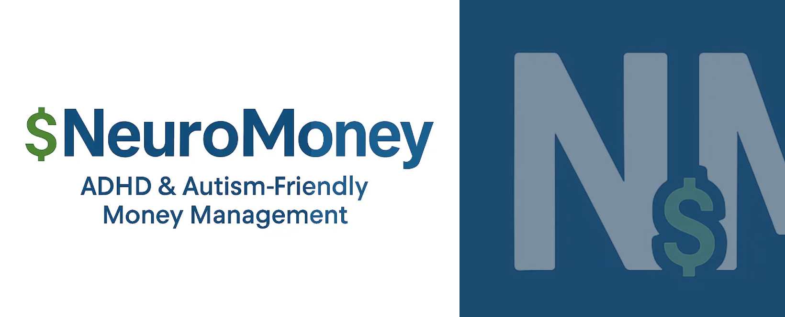

Northburn Startup NeuroMoney LTD Regional Award Finalist
10TH APR 2026
CramlingtonNews Editors and NeuroMoney LTD

A Cramlington-based startup is gaining early recognition after being shortlisted for a major regional business award just months after launching.
NeuroMoney LTD, based in Northburn, Cramlington, is a fintech startup developing software tools designed specifically for neurodivergent adults, including those with ADHD and autism. The platform focuses on improving money and shopping management, with the aim of reducing financial instability and addressing what is often described as the “neurodivergent tax”.
The company launched its initial minimum viable product on 28th February 2026, following two years of development. It was founded and bootstrapped by solo tech founder Luke Henderson, who built the platform from the ground up with a focus on accessibility and practical usability. Since launch, NeuroMoney has begun onboarding users in both the United Kingdom and the United States, marking an early step into international markets.
The startup has now been shortlisted as a finalist in the UK StartUp Awards 2026 for the North East, Yorkshire and the Humber region, in the “Startup for Good” category. The regional finals will take place at Everyman in Leeds on 16th June 2026. More than 2,100 startups applied to take part in this year's awards, with six finalists selected in this category. NeuroMoney will compete alongside Cash Academy, Cocoon Digital, EmpowerMama CIC, ImaginAble Me CIC, and Pektus.
Winners of the regional awards will progress to the national stage at Ideas Fest 2026, where they will compete for the overall UK title. The recognition marks an early milestone for NeuroMoney as it continues to develop its platform and expand its user base, positioning itself within the growing space of accessible and inclusive financial technology.